전자계산기조직응용기사 (2017-08-26 기출문제)
1과목: 전자계산기 프로그래밍
1. 객체지향 기반의 언어가 아닌 것은?
- JAVA
- C++.NET
- C#.NET
- GWBASIC
(정답률: 83%)

2. 다음의 프로그램을 실행한 결과로 옳은 것은?
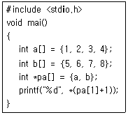
- 2
- 3
- 6
- 8
(정답률: 77%)
3. 프로그램의 작성과정을 순서대로 바르게 나열한 것은?
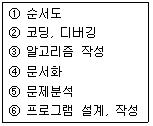
- ④-＞③-＞①-＞⑥-＞②-＞⑤
- ④-＞⑤-＞①-＞⑥-＞②-＞③
- ⑤-＞③-＞①-＞⑥-＞②-＞④
- ⑤-＞⑥-＞①-＞②-＞③-＞④
(정답률: 76%)
4. 제어문에 대한 설명으로 가장 거리가 먼 것은?
- 무조건 제어문은 어떤 조건 없이 무조건 지정한 곳으로 제어를 옮긴다.
- 순차적으로 실행하는 프로그램의 실행 순서를 선택적으로 수행하도록 한다.
- 조건 제어문은 여러 경로를 통하여 한꺼번에 여러 경로로 제어를 옮긴다.
- 제어문에는 무조건 제어문과 조건 제어문이 있다.
(정답률: 82%)
5. 어셈블리에서 주로 산술 연산에 사용되는 레지스터에 해당하는 것으로 가장 옳은 것은?
- AX
- BP
- SI
- SP
(정답률: 77%)
6. 컴파일 단계에 대한 설명으로 가장 옳은 것은?
- 구문분석 단계에서는 의미적 오류를 검사한다.
- 기계어에 가까운 중간 코드로 된 프로그램을 생성한 후 문법적 오류를 검사한다.
- 어휘분석에서 파스 트리 생성을 시작한다.
- 원시 프로그램을 토큰단위로 자르는 것은 어휘분석 단계이다.
(정답률: 53%)
7. 다음 중 C언어의 열거형에 해당하는 것은?
- enum
- subtype
- typdef
- union
(정답률: 78%)
8. 럼바우(Rumbaugh) 모델링에서 상태도 및 자료 흐름도와 각각 관계되는 모델링은?
- 상태도 – 기능모델링, 자료 흐름도 – 동적모델링
- 상태도 – 동적모델링, 자료 흐름도 – 기능모델링
- 상태도 – 객체모델링, 자료 흐름도 – 동적모델링
- 상태도 – 객체모델링, 자료 흐름도 – 기능 모델링
(정답률: 69%)
9. C언어에 대한 설명으로 가장 옳지 않은 것은?
- 구조화 언어라고 부를 수 있는 제어구조와 제어문을 가지고 있다.
- 어셈블리어와 같은 저급언어의 범주에 속한다.
- 포인터의 사용이 가능하다.
- 이식성이 뛰어나다.
(정답률: 87%)
10. 어셈블리어에서 어떤 기호적 이름에 상수 값을 할당하는 명령어는?
- ASSUME
- EVEN
- EQU
- ORG
(정답률: 86%)
11. 어셈블리어에서 사용되는 어셈블러 명령(의사 명령, 지시 명령)에 해당하는 것은?
- AH
- DROP
- SR
- LA
(정답률: 72%)
12. 객체지향프로그래밍에서 정보 은닉과 가장 관계가 깊은 것은?
- 결합화
- 상속화
- 응집화
- 캡슐화
(정답률: 91%)
13. 다음의 의사명령 중에서 데이터의 형식을 지정하는 의사명령은?
- SEGMENT~END
- DEC
- IF~ELSE~ENDIF
- BYTE PTR
(정답률: 57%)
14. Interrupt Service Routine으로부터의 복귀명령에 해당하는 명령은?
- RET
- IRET
- INT 21H
- INT 0H
(정답률: 56%)
15. 레지스터 R1=1100, R2=0101이 저장되어 있을 때 selective-set 연산을 수행하면 결과값은?
- 0100
- 0101
- 1100
- 1101
(정답률: 74%)
16. 기계어에 대한 설명으로 옳지 않은 것은?
- 2진수를 사용하여 데이터를 표현한다.
- 컴퓨터가 이해할 수 있는 언어이다.
- 사람 중심의 언어로서 유지보수가 용이하다.
- 프로그램의 실행 속도가 빠르다.
(정답률: 88%)
17. 객체지향프로그래밍의 특징으로 가장 옳지 않은 것은?
- C++, Smalltalk 등의 언어가 이에 속한다.
- 객체 중심은 구조적 코딩 기능을 극대화할 수 있다.
- 객체 중심의 프로그래밍 기법으로 클래스의 재사용성(reusability)이 높다.
- 클래스에는 함수와 객체의 속성이 정의되며, 객체는 클래스 내에 정의된 멤버 함수를 통해서 접근이 가능하다.
(정답률: 70%)
18. 베이스 주소 지정방법의 특징으로 가장 옳지 않은 것은?
- 명령어의 길이가 줄어들어 효율적으로 기억장치 이용이 가능하다.
- 목적프로그램의 재배치성을 높일 수 있다.
- 액세스할 수 있는 기억장치의 범위는 4kb로 제한된다.
- 명령 레지스터를 통해 원하는 기억장치 주소 지정과 프로그램 상태를 제어 할 수 있다.
(정답률: 40%)
19. 어셈블러에서 매크로(MACRO) 전개방법에 대한 설명으로 가장 옳지 않은 것은?
- 직접 코드 매크로는 어셈블러가 정상적인 어셈블리 처리를 멈추고 후에 사용하기 위해서 입력을 저장하는 모드로 돌아가게 한다.
- 매크로와 MEND 또는 ENDM 자체를 저장할 필요는 없으나 매크로를 따르는 줄의 정보는 매크로 정의의 인덱스 안에 저장되어야만 한다.
- 매크로 식별자는 보조 니모닉 테이블인 인덱스에 넣어져야 하고 인자 식별자 또한 인덱스나 그 정의 앞에 저장되어진다.
- MEND 또는 ENDM이 읽혀지기 전에 어셈블러는 정상적인 모드로 돌아간다.
(정답률: 57%)
20. 의사연산 테이블(pseudo operation table)에 대한 설명으로 가장 옳은 것은?
- 고정 데이터베이스로서 패스-1에서만 참조한다.
- 고정 데이터베이스로서 패스-1, 패스-2에서 참조한다.
- 가변 데이터베이스로서 패스-1에서만 참조한다.
- 가변 데이터베이스로서 패스-1, 패스-2에서 참조한다.
(정답률: 70%)
2과목: 자료구조 및 데이터통신
21. 전송 데이터가 있는 동안에만 Time 슬롯을 할당하는 다중화 방식은?
- 통계적 시분할 다중화
- 광파장 분할 다중화
- 동기식 시분할 다중화
- 주파수 분할 다중화
(정답률: 68%)
22. 전파가 다중 반사되어 수신점에 도달하게 되므로 이들 전파의 도달시간 차이로 인해 수신점에서 심벌(symbol)이 겹치는 현상이 일어나는데 이를 무엇이라고 하는가?
- 동일채널간섭
- 지연확산
- 도플러 효과
- 대척점 효과
(정답률: 63%)
23. IP 주소의 5개 클래스 중 멀티캐스팅을 사용하기 위해 예약되어 있으며 netid와 hostid가 없는 것은?
- A 클래스
- B 클래스
- C 클래스
- D 클래스
(정답률: 78%)
24. TCP/IP 계층화 모델 중 전송 계층에 사용되는 프로토콜은?
- FTP
- Telnet
- DNS
- TCP
(정답률: 77%)
25. 패킷 교환 방식 중 가상 회선 방식에 대한 설명으로 옳은 것은?
- 메시지마다 경로 설정
- 비연결형 지향 서비스
- 메시지를 1개 복사하여 여러 노드로 전송
- 패킷들은 경로가 설정된 후 경로에 따라 순서적으로 전송하는 방식
(정답률: 66%)
26. 에러 제어에 사용되는 자동반복 요청(ARQ) 기법이 아닌 것은?
- stop-and-wait ARQ
- go-back-N ARQ
- auto-repeat ARQ
- selective-repeat ARQ
(정답률: 68%)
27. HDLC 프레임 형식 중 프레임의 종류를 식별하기 위해 사용되는 것은?
- 정보영역
- 제어영역
- 주소영역
- 플래그
(정답률: 37%)
28. 하나의 메시지 단위로 저장-전달(Store-and-Forward) 방식에 의해 데이터를 교환하는 방식은?
- 메시지교환
- 공간분할회선교환
- 패킷교환
- 시분할회선교환
(정답률: 71%)
29. 문자의 시작과 끝에 각각 Start 비트와 Stop 비트가 부가되어 전송의 시작과 끝을 알려 전송하는 방식은?
- 비동기식 전송
- 동기식 전송
- 전송 동기
- PCM 전송
(정답률: 72%)
30. 25개의 노드(node)를 망형으로 연결할 때, 필요한 회선의 수는?
- 250
- 300
- 350
- 500
(정답률: 70%)
31. 다음 자료에 대하여 삽입 정렬을 사용하여 오름차순으로 정렬할 경우 Pass 2의 결과는?
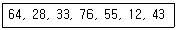
- 28, 33, 64, 76, 55, 12, 43
- 28, 64, 33, 76, 55, 12, 43
- 12, 28, 64, 33, 76, 55, 43
- 12, 28, 33, 55, 64, 76, 43
(정답률: 73%)
32. 해싱 기법에서 동일한 홈 주소로 인하여 충돌이 일어난 레코드들의 집합을 의미하는 것은?
- Overflow
- Bucket
- Collision
- Synonym
(정답률: 73%)
33. 다음과 같은 이진 트리의 Preorder 운행 결과는?
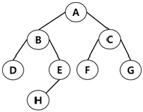
- A B D E H C F G
- A B C D E F G H
- A H E B F G C D
- D B H E A F C G
(정답률: 86%)
34. 스택에 대한 설명으로 옳지 않은 것은?
- 리스트의 한쪽 끝으로만 자료의 삽입, 삭제 작업이 이루어지는 자료 구조이다.
- 스택으로 할당된 기억공간에 가장 마지막으로 삽입된 자료가 기억된 공간을 가리키는 요소를 TOP이라고 한다.
- 가장 먼저 삽입된 자료가 가장 먼저 삭제되는 FIFO 방식이다.
- 부프로그램 호출 시 복귀주소를 저장할 때 스택을 이용한다.
(정답률: 89%)
35. 색인 순차 파일의 색인 구역에 해당하지 않는 것은?
- 트랙 색인 구역
- 실린더 색인 구역
- 마스터 색인 구역
- 오버플로우 색인 구역
(정답률: 83%)
36. 데이터베이스의 3층 스키마에 해당하지 않는 것은?
- 내부 스키마
- 외부 스키마
- 관계 스키마
- 개념 스키마
(정답률: 84%)
37. 트랜잭션의 특성에 해당하지 않는 것은?
- Isolation
- Consistency
- Atomicity
- Distribution
(정답률: 83%)
38. 다음 트리의 차수(Degree)는?
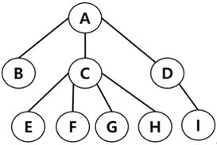
- 2
- 3
- 4
- 9
(정답률: 73%)
39. DBMS의 필수 기능에 해당하지 않는 것은?
- 정의 기능
- 응용 기능
- 조작 기능
- 제어 기능
(정답률: 83%)
40. 선형 구조에 해당하지 않는 것은?
- 스택
- 트리
- 큐
- 데크
(정답률: 85%)
3과목: 전자계산기구조
41. 다음 중 연관 메모리(associative memory)의 특징으로 가장 옳지 않은 것은?
- Thrashing 현상 발생
- 내용 지정 메모리(CAM)
- 메모리에 저장된 내용에 의한 액세스
- 기억장치에 저장된 항목을 찾는 시간절약
(정답률: 63%)
42. 스택(stack)구조의 컴퓨터에서 수식을 계산하기 위해서는 먼저 수식을 어떠한 형태로 바꾸어야 하는가?
- Infix 형태
- John 형태
- Postfix 형태
- Prefix 형태
(정답률: 69%)
43. 부동 소수점 파이프라인의 비교시, 시프터, 가산-감산기, 인크리멘터, 디크리멘터가 모두 조합 회호호 구성된다고 가정할 때, 네 세그먼트의 시간 지연이 t1=60ns, t2=70ns, t3=100ns, t4=80ns이고, 중간 레지스터의 지연이 tr=10ns라고 가정하면 비 파이프라인 구조에 비해 약 몇 배의 속도가 향상되는가?
- 0.6
- 1.1
- 2.4
- 2.9
(정답률: 49%)
44. 중앙처리장치의 구성 요소 중 플립플롭이나 래치(Latch)들을 병렬로 연결하여 구성하는 것은?
- 가산기
- 곱셈기
- 디코더
- 레지스터
(정답률: 67%)
45. 그레이 코드(Gray Code)에 대한 설명으로 틀린 것은?
- 인접한 숫자들의 비트가 1비트만 변화되어 만들어진 코드이다.
- 그레이 코드 자체로 연산이 불가능하기 때문에 2진수로 변환한 후 연산을 수행하고 그 결과를 다시 그레이 코드로 변환하여야 한다.
- 그레이 코드를 2진 코드로 혹은 2진 코드를 그레이 코드로 변환 시 두 입력값에 대해 AND 연산을 수행한다.
- 그레이 코드 값(0 1 1 1)G는 10진수로 5를 의미한다.
(정답률: 67%)
46. 명령인출(instruction fetch)과 수행단계(execute phase)를 중첩시켜 하나의 연산을 수행하는 구조를 갖는 처리방식은?
- 명령 파이프라인(instruction pipeline)
- 산술 파이프라인(arithmetic pipeline)
- 실행 파이프라인(execute pipeline)
- 세그먼트 파이프라인(segment pipeline)
(정답률: 58%)
47. 인터럽트와 비교하여 DMA방식에 의한 사이클 스틸의 가장 특징적인 차이점으로 옳은 것은?
- 수행 중인 프로그램을 대기상태로 전환
- 정지 상태인 프로그램을 완전히 소멸
- 대기 중인 프로그램을 다시 실행
- 주기억 장치 사이클의 특정한 주기만 정지
(정답률: 65%)
48. +375를 팩10진형 방식으로 표현한 방법은 언팩 10진형 방식으로 표현하였을 때보다 몇 비트의 기억장소가 절약되는가?
- 2
- 4
- 6
- 8
(정답률: 45%)
49. 마이크로 오퍼레이션(micro-operation)에 관한 설명으로 가장 옳지 않은 것은?
- 레지스터에 저장된 데이터에 의해 이루어지는 동작이다.
- 한 개의 클록(clock)펄스 동안 실행되는 기본동작이다.
- 한 개의 Instruction은 여러 개의 마이크로오퍼레이션이 동작되어 실행된다.
- 현재 실행 중인 프로그램이다.
(정답률: 65%)
50. 디멀티플렉서(Demultiplexer)에 대한 설명으로 가장 옳은 것은?
- 디코더라고도 불린다.
- 2n개의 Input line과 n개의 Output line을 갖는다.
- n개의 Input line과 2n개의 Output line을 갖는다.
- 1개의 Input line과 n개의 Selection line에 의해 2n개의 Output line 중 하나를 선택한다.
(정답률: 55%)
51. 8진수 (563)8의 7의 보수를 구하면?
- (214)8
- (215)8
- (324)8
- (325)8
(정답률: 63%)
52. 가상메모리 시스템에서 20비트의 논리 주소가 4비트의 세그먼트 번호, 8비트의 페이지 번호, 8비트의 워드 필드로 구성될 경우에 한 세그먼트의 최대 크기로 옳은 것은?
- 256 word
- 4 kilo word
- 16 kilo word
- 64 kilo word
(정답률: 53%)
53. 동기가변식 마이크로오퍼레이션 사이클 타임을 정의하는 방식은 수행시간이 유사한 마이크로오퍼레이션들끼리 모아 집합을 이루고 각 집합에 대해서 서로 다른 마이크로오퍼레이션 사이클 타임을 정의한다. 이때 각 집합 간의 마이크로 사이클 타임을 정수배가 되도록 하는 가장 큰 이유는?
- 각 집합 간 서로 다른 사이클 타임의 동기를 맞추기 위하여
- 각 집합 간의 사이클 타임을 동시식과 비동기식으로 정의하기 위하여
- 각 집합 간의 사이클 타임을 모두 다르게 정의하기 위하여
- 사이클 타임을 비동기식으로 변환하기 위하여
(정답률: 66%)
54. 데이지체인(daisy-chain)에 대한 설명으로 가장 옳은 것은?
- 소프트웨어적으로 가장 높은 순위의 인터럽트 소스부터 차례로 검사하여 그 중 가장 높은 우선수위 소스를 찾아낸다.
- 인터럽트를 방생하는 모든 장치들을 직렬로 연결한다.
- 각 장치의 인터럽트 요청에 따라 각 비트가 개별적으로 세트될 수 있는 레지스터를 사용한다.
- CPU에서 멀수록 우선순위가 높다.
(정답률: 65%)
55. 다음 중 전달기능의 인스트럭션 사용빈도가 매우 낮은 인스트럭션 형식은?
- 메모리-메모리 인스트럭션 형식
- 레지스터-레지스터 인스트럭션 형식
- 레지스터-메모리 인스트럭션 형식
- 스택 인스트럭션 형식
(정답률: 62%)
56. 캐시기억장치 운영에서 매핑 함수의 의미를 가장 옳게 설명한 것은?
- 주기억장치와 I/O장치의 블록 크기를 정하는 방법이다.
- 캐시 기억장치의 적중률과 미스율을 정하는 방법이다.
- 캐시 기억장치의 태그 필드에 값을 인코딩하는 방법이다.
- 주기억장치의 한 개의 블록을 캐시 라인에 배정하는 규칙이다.
(정답률: 52%)
57. 소프트웨어에 의한 우선순위 판별 방법으로 가장 옳은 것은?
- 인터럽트 벡터
- 폴링
- 채널
- 핸드셰이킹
(정답률: 71%)
58. 2의 보수를 사용하여 음수를 표현할 때의 설명으로 가장 옳은 것은?
- 0은 두 가지로 표현된다.
- 보수를 구하기가 쉽다.
- 보수를 이용한 연산 과정 중 엔드 어라운드 캐리(end around carry) 과정이 있다.
- 음수의 최대 절대치가 양수의 최대 절대치보다 1만큼 크다.
(정답률: 63%)
59. DMA에 대한 설명으로 가장 옳지 않은 것은?
- DMA는 Direct Memory Accesss의 약자이다.
- DMA는 기억장치와 주변장치 사이의 직접적인 데이터 전송을 제공한다.
- DMA는 블록으로 대용량의 데이터를 전송할 수 있다.
- DMA는 입출력 전송에 따른 CPU의 부하를 증가시킬 수 있다.
(정답률: 68%)
60. CPU와 기억장치 사이에 실질적인 대역폭(band width)을 늘리기 위한 방법으로 가장 적합한 것은?
- 메모리 버스트
- 메모리 인코딩
- 메모리 인터리빙
- 메모리 채널
(정답률: 74%)
4과목: 운영체제
61. 다음의 페이지 참조 열(Page reference string)에 대해 페이지 교체 기법으로 FIFO를 사용할 경우 페이지 부재(Page Fault)횟수는? (단, 할당된 페이지 프레임 수는 3이고, 처음에는 모든 프레임이 비어있다.)
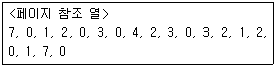
- 13
- 14
- 15
- 20
(정답률: 61%)
62. Public Key System에 대한 설명으로 틀린 것은?
- 공용키 암호화 기법을 이용한 대표적 암호화 방식에는 RSA가 있다.
- 암호화키와 해독키가 따로 존재한다.
- 암호화키와 해독키는 보안되어야 한다.
- 키의 분배가 용이하다.
(정답률: 55%)
63. 다음과 같은 프로세스가 차례로 큐에 도착하였을 때, SJF 정책을 사용할 경우 가장 먼저 처리되는 작업은?
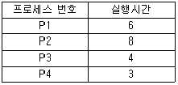
- P1
- P2
- P3
- P4
(정답률: 74%)
64. 주기억장치 배치 전략 기법으로 최적 적합 방법을 사용한다고 할 때, 다음과 같은 기억장소 리스트에서 10K 크기의 작업은 어느 기억공간에 할당되는가? (단, K=kilo이고, 탐색은 위에서부터 아래로 한다고 가정한다.)
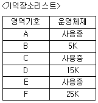
- B
- D
- F
- 어떤 영역에도 할당될 수 없다.
(정답률: 82%)
65. 교착상태가 발생할 수 있는 조건이 아닌 것은?
- Mutual exclusion
- Hold and wait
- Nonpreemption
- Liner wait
(정답률: 66%)
66. 다음 운영체제에 대한 설명 중 가장 옳지 않은 것은?
- 다중 사용자와 다중 응용프로그램 환경하에서 자원의 현재 상태를 파악하고 자원 분배를 위한 스케줄링을 담당한다.
- CPU, 메모리 공간, 기억 장치, 입출력 장치 등의 자원을 관리한다.
- 운영체제의 종류로는 매크로 프로세서, 어셈블러, 컴파일러 등이 있다.
- 입출력 장치와 사용자 프로그램을 제어한다.
(정답률: 77%)
67. 다음 기억장치 관리에 관한 설명에 가장 부합하는 기법은?
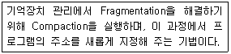
- Coalescing
- Garbage Collection
- Relocation
- Swapping
(정답률: 71%)
68. 프로세스(Process)의 정의로 옳지 않은 것은?
- PCB를 가진 프로그램
- 동기적 행위를 일으키는 주체
- 프로세서가 할당되는 실체
- 활동 중인 프로시저(Procedure)
(정답률: 71%)
69. 디스크 입·출력 요청 대기 큐에 다음과 같은 순서로 기억되어 있다. 현재 헤드가 53에 있을 때, 이를 모두 처리하기 위한 총 이동 거리는 얼마인가? (단, FCFS 방식을 이용한다.)
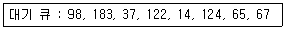
- 320
- 640
- 710
- 763
(정답률: 58%)
70. Crossbar Switch Matrix에 관한 설명으로 가장 옳지 않은 것은?
- 각 기억장치마다 다른 경로를 사용할 수 있다.
- 시분할 및 공유버스 방식에서 버스의 숫자를 프로세서의 숫자만큼 증가시킨 구조이다.
- 두 개의 서로 다른 저장장치를 동시에 참조할 수 있다.
- 장치의 연결이 복잡해진다.
(정답률: 53%)
71. UNIX에 대한 설명으로 틀린 것은?
- 상당 부분 C언어를 사용하여 작성되었으며, 이식성이 우수하다.
- 사용자는 하나 이상의 작업을 백그라운드에서 수행할 수 있어 여러 개의 작업을 병행 처리할 수 있다.
- 셀(shell)은 프로세스 관리, 기억장치 관리, 입출력 관리 등의 기능을 수행한다.
- 두 사람 이상의 사용자가 동시에 시스템을 사용할 수 있어 정보와 유틸리티들을 공유하는 편리한 작업 환경을 제공한다.
(정답률: 78%)
72. Relative Loader가 수행해야 할 기능으로 틀린 것은?
- 각 세그먼트가 주기억장치 내의 어느 곳에 위치할 것인가를 결정한다.
- 각 세그먼트를 주기억장치 내의 할당된 장소에 넣는다.
- 각 세그먼트들을 연결한다.
- 각 세그먼트의 절대번지를 상대번지로 고친다.
(정답률: 57%)
73. 파일 시스템의 기능에 대한 설명으로 가장 옳지 않은 것은?
- 사용자와 보조기억장치 사이에서 인터페이스를 제공한다.
- 사용자가 파일을 생성, 수정, 제거할 수 있도록 해준다.
- 적절한 제어 방식을 통해 타인의 파일을 공동으로 사용할 수 있도록 해준다.
- 하드웨어를 동작시켜 사용자가 작업을 편리하게 수행하도록 하는 프로그램이다.
(정답률: 59%)
74. FIFO 스케줄링에서 3개의 작업 도착시간과 CPU 사용시간(burst time)이 다음 표와 같다. 이때 모든 작업들의 평균 반환시간(turn around time)은? (단, 소수점 발생 시 정수 형태로 반올림한다.)
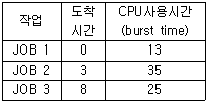
- 16
- 20
- 33
- 41
(정답률: 62%)
75. 스레드(Thread)에 대한 설명으로 가장 거리가 먼 것은?
- 하나의 스레드는 상태를 줄인 경량 프로세스라고도 한다.
- 프로세스 내부에 포함되는 스레드는 공통적으로 접근 가능한 기억장치를 통해 효율적으로 통신한다.
- 스레드를 사용하면 하드웨어, 운영체제의 성능과 응용 프로그램의 처리율을 향상시킬 수 있다.
- 하나의 프로세스에는 하나의 스레드만 존재하여 독립성을 보장한다.
(정답률: 82%)
76. 은행가 알고리즘(Banker's Algorithm)은 교착상태의 해결 방법 중 어떤 기법에 해당하는가?
- Avoidance
- Detection
- Prevention
- Recovery
(정답률: 77%)
77. 임계 영역(Critical Section)에 대한 설명으로 가장 옳은 것은?
- 프로세스들의 상호배제(Mutual Exclusion)가 일어나지 않도록 주의해야 한다.
- 임계 영역에서 수행 중인 프로세스는 인터럽트가 가능한 상태로 만들어야 한다.
- 어떤 하나의 프로세스가 임계 영역 내에 진입한 후 다른 프로세스들은 일제히 임계영역으로 진입할 수 있다.
- 임계 영역에서의 작업은 최대한 빠른 속도로 수행되어야 한다.
(정답률: 52%)
78. 프로세스가 자원을 기다리고 있는 시간에 비례하여 우선순위를 부여함으로써 무기한 문제를 방지하는 기법은?
- Aging
- Reusable
- Circular wait
- Deadly embrace
(정답률: 68%)
79. OS의 가상기억장치 관리에서 프로세스가 일정 시간 동안 자주 참조하는 페이지들의 집합을 의미하는 것은?
- Thrashing
- Deadlock
- Locality
- Working Set
(정답률: 74%)
80. 데커(Dekker) 알고리즘에 대한 설명으로 틀린 것은?
- 교차상태가 발생하지 않음을 보장한다.
- 프로세스가 임계영역에 들어가는 것이 무한정 지연될 수 있다.
- 공유 데이터에 대한 처리에 있어서 상호배제를 보장한다.
- 별도의 특수 명령어 없이 순수하게 소프트웨어로 해결된다.
(정답률: 55%)
5과목: 마이크로 전자계산기
81. 마이크로컴퓨터의 시스템 소프트웨어 중 사용자가 작성한 프로그램을 실행하면서 에러를 검출하고자 할 때 사용되는 것은?
- 로더(loader)
- 디버거(debugger)
- 컴파일러(compiler)
- 텍스트 에디터(text editor)
(정답률: 84%)
82. DRAM(dynamic RAM)에 관한 설명으로 가장 옳지 않은 것은?
- refresh 회로가 필요하다.
- 가격이 저렴하고, 전력 소모가 적다.
- 경제성이 뛰어나 주기억 장치로 많이 사용된다.
- 읽기 전용 메모리이다.
(정답률: 82%)
83. HALT 명령이 실행되면 CPU는 동작을 멈추게 되고 CPU의 외부 제어 신호인
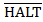
를 low로 하여 외부 장치에게 알리게 된다. 이 상태(HALT상태)에서 벗어나기 위해 수행되어야 할 사항으로 가장 타당한 것은?- CPU 외부로부터 인터럽트가 요청되어야 한다.
- DMA를 통해 입출력 동작을 수행한다.
- NOP 명령을 실행한다.
- 외부 자치 요청 신호(
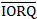
)를 보낸다.
(정답률: 57%)
84. 주 메모리의 성능을 평가하는 중요한 요소가 아닌 것은?
- 기억소자
- 기억용량
- 대역폭
- 사이클 시간
(정답률: 73%)
85. 표(Table)형식의 자료를 처리할 때 가장 유용하게 사용할 수 있는 명령어의 주소지정방식은?
- Relative Addressing
- Indexed Addressing
- Absolute Addressing
- Implied Addressing
(정답률: 78%)
86. 총 158개의 명령어를 내장하고 OP코드와 주소로 구성되어 있는 32비트 마이크로컴퓨터에서 생성 가능한 최대 기억장치의 크기로 가장 옳은 것은? (단, 워드 단위로 주소를 가지며, 하나의 워드는 하나의 명령을 나타낸다.)
- 2,097,152
- 4,194,304
- 16,777,216
- 33,554,432
(정답률: 60%)
87. 소스프로그램의 번역이 이루어지는 컴퓨터와 번역된 기계어에 이용되는 컴퓨터가 서로 다른 기종의 컴퓨터일 때 사용하는 언어 번역기의 명칭으로 가장 타당한 것은?
- 컴파일러(Compiler)
- 인터프리터(interpreter)
- 크로스 컴파일러(cross-compiler)
- 목적 지향 언어(object-oriented language)
(정답률: 79%)
88. Read/Write signal이나 Chip Select signal 등의 신호는 어느 버스에 싣게 되는가?
- 자료 버스
- 주소 버스
- 제어 버스
- 보조 버스
(정답률: 76%)
89. 다음 기억소자 중 휘발성(Volatile) 기억소자는?
- Bubble memory
- Core memory
- RAM
- ROM
(정답률: 83%)
90. 다음 ALU의 기능에 관한 설명 중 가장 옳지 않은 것은?
- 가산을 한다.
- AND 동작을 한다.
- complement 동작을 한다.
- PC를 1만큼 증가시킨다.
(정답률: 69%)
91. 다음 중 엑세스 시간이 가장 짧은 것은?
- Random Access Memory
- Read Only Memory
- Input Device
- 프로세서 내의 레지스터
(정답률: 75%)
92. 다음과 같은 인터럽트 입출력(interrupt I/O) 방식에서 사용되는 데이지 체인(daisy chain)에서 인터럽트의 우선순위(priority)가 가장 높은 것은? (단, IREQ는 interrupt request 신호이며 IACK는 interrupt acknowledge 신호이다.)
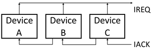
- Device A
- Device B
- Device C
- A, B, C 모두 같다.
(정답률: 75%)
93. 8비트 마이크로프로세서의 일반적인 내부 버스와 레지스터의 크기는?
- 4bit
- 8bit
- 16bit
- 32bit
(정답률: 75%)
94. 데스크톱 컴퓨터의 메인 보드에 대한 산업계의 개방형 규격으로 마이크로프로세서와 확장 슬롯들의 배치를 90도 회전시킴으로써 마더 보드 설계를 개선한 것은?
- ATX
- AGP
- PCI
- IrDA
(정답률: 63%)
95. 데이터의 전송 방향 및 시점 제어, 주기억장치 또는 입출력 장치 읽기/쓰기 제어, 데이터 스트로브와 주소 스트로브, 준비 신호를 전달하는 역할을 하는 버스의 신호선은 무엇인가?
- Bus Control Lines
- Clock Lines
- Data Lines
- Data Transfer Control Lines
(정답률: 57%)
96. 메모리부터 명령을 읽어오는 과정에서 필요하지 않은 장치는?
- Accumulator
- MAR(Memory Address Register)
- MBR(Memory Buffer Register)
- PC(Program Counter)
(정답률: 70%)
97. 가상기억 장치에 대한 설명으로 틀린 것은?
- 주기억 장치의 기억 용량보다 더 큰 주소 영역을 갖는 프로그램을 사용할 수 있게 한다.
- 가상기억 장치에 사용되는 보조기억장치는 직접 접근이 가능한 기억장치이어야 한다.
- 프로그램을 기억 공간에서 작성하여 번지 공간으로 이동하여 실행하게 된다.
- 번지 변환 방법에는 직접 사상, 연관 사상, 페이지 번지 변환 등이 있다.
(정답률: 36%)
98. 기억장치 사이클 타임(Mt)과 기억장치 접근 시간(At)의 관계식으로 가장 옳은 것은?
- Mt = At
- Mt ≥ At
- Mt ＜ At
- Mt ＞ At
(정답률: 74%)
99. 로더(loader)에 관한 설명을 가장 옳은 것은?
- symbol 언어로 작성된 프로그램을 기계어로 바꾸어 주는 동작
- 목적 프로그램(Object Program)을 실행하기 위해 메모리에 적재하는 역할을 수행하는 시스템 프로그램
- 운영체제를 구성하는 각종 프로그램들을 종류와 특성에 따라 구분하여 보관해 두는 기억영역
- 어떤 데이터 기억매체로부터 다른 기억 매체로 전송 또는 복사하는 프로그램
(정답률: 74%)
100. 데이터 전송 방식에 대한 설명으로 가장 옳지 않은 것은?
- 직렬 전송은 레지스터의 내용을 클록펄스가 들어올 때마다 1비트씩 차례로 전송하는 방식이다.
- 병렬 전송은 데이터 전송 속도가 빠르며 직렬 전송보다 회로 구성이 간단하다.
- 버스를 통한 전송은 각 회로가 공동으로 사용할 데이터 전달 회선을 사용하며, 신호 중계 역할을 수행하는 인터페이스가 있다.
- 메모리에 있는 정보를 외부로 전송하는 것을 read라 하고 외부의 정보를 메모리에 기억시키는 것을 write라 한다.
(정답률: 82%)